Scores for Poems 11–14
Each poem has its own score, keyed to his words. His voice always plays dry and first. Other takes of his voice come in only as distant echoes, on the phrases that ask for them. When a poem has no reels of its own, the score uses his reading at other moments, the room listening, and reels borrowed from other poems where his words point to them.
Every frame below was rendered by Mix Discs from the score itself. Under each one: the time in the poem, the words he is saying, and what the picture does.
11gold ring on a poem number = it has a performance✦ plays it live, on his clocktouch anything to take over
11New Day
A liturgy of light
He is alone in the cold at first. Borrowed worlds rise as he names them: wings, a flame, the memorial walk. They lock into blocks when he says "rebuild this temple". The three refrains raise the dawn in three steps, and everything he has known gathers round him in the sunlight.
- his reading
- Atlantis (poem 06): wings, flame, temple
- the cenotaph walkway (poem 11's street walk)
- the waterfall of letters (poem 06 walk)
- a sunlit city (probe)
- his own face from earlier, as a mirror
- line sounds and rooms
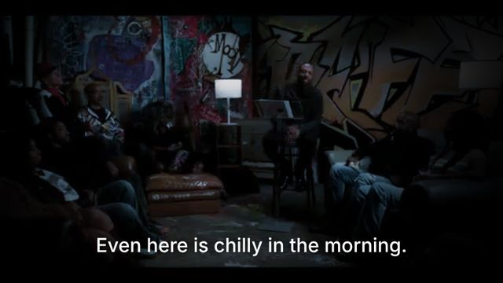
0:03.8Even here is chilly in the morning.
cold tint, he is alone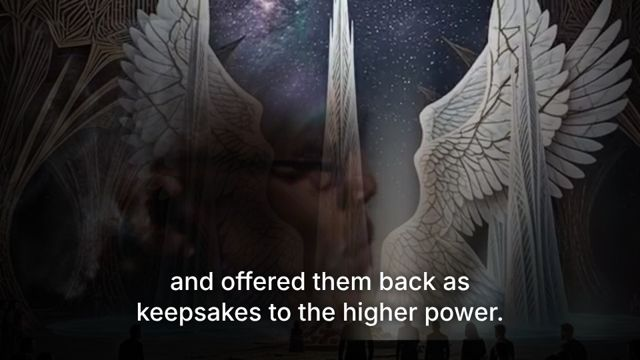
0:23.5them back as keepsakes
wings rise above him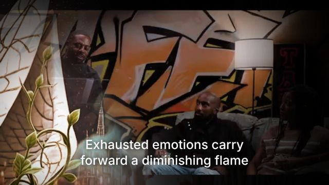
0:28.8carry forward a diminishing flame
the flame shrinks to an ember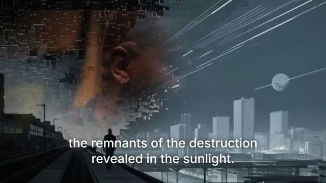
0:36.8of the destruction revealed
the memorial walk sweeps in, warming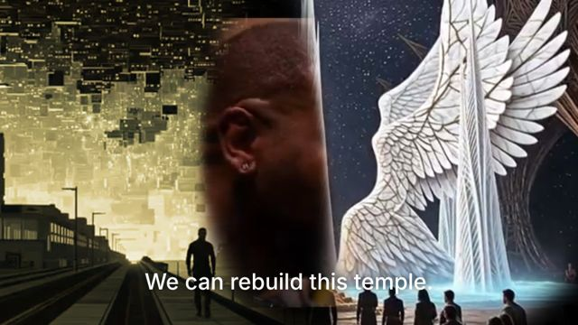
0:40.0We can rebuild this temple.
the frame sets into blocks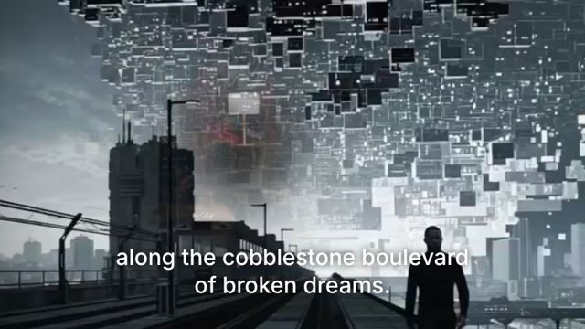
0:47.5painful crawl along the cobblestone
the walker crosses the broken city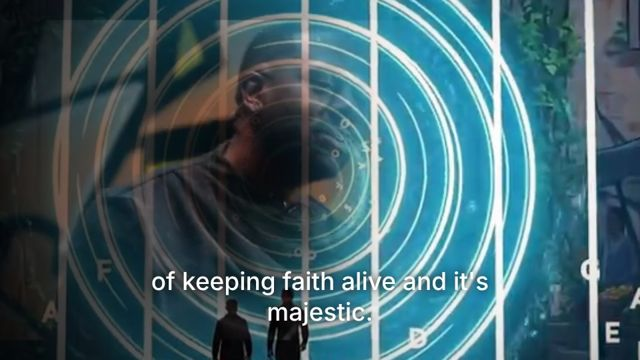
1:02.6faith alive and it's
the letters open like a journal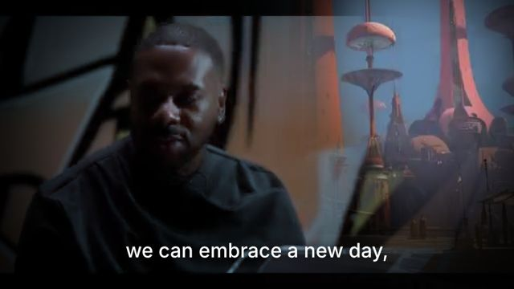
1:17.4we can embrace a new day,
first refrain: a little light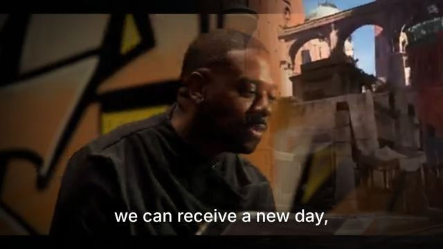
1:19.4we can receive a new day,
second: more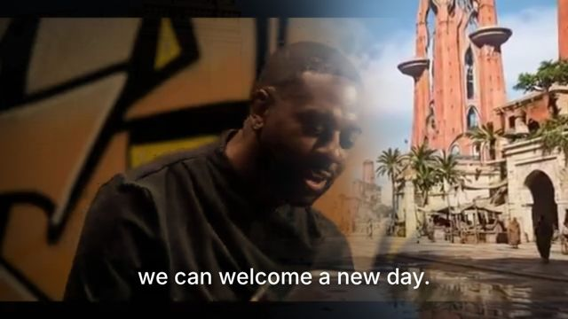
1:21.8we can welcome a new day.
third: the sunlit city opens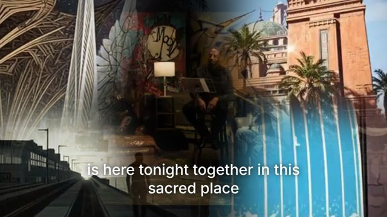
1:28.0celebrating and believing is
everything he has known, gathered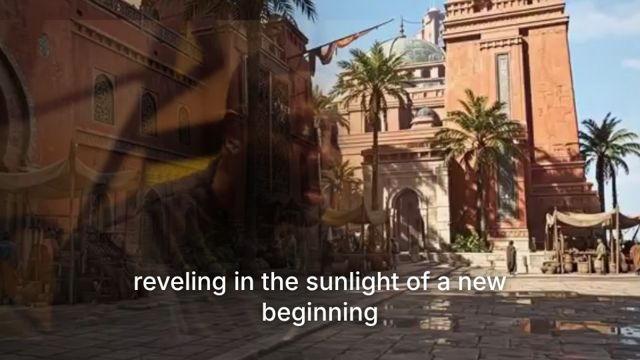
1:34.0in the sunlight of a new beginning
the new beginningEvery take of him gathers. The other takes' voices sound only on "loud voices so our hearts can be overheard". The afterlife drains to one empty room. "We're all here" becomes four equal cells and "brotherhood" holds them still. On "the next brother's soul" the ear travels from one brother to the next and hears each.
- his reading
- Reunion as nine shots (aligned to his words)
- Reunion, the hall (aligned)
- the room listening (his own wide shot)
- a sunlit city, the starfield (borrowed)
- line sounds and rooms
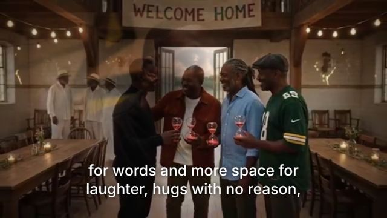
0:06.0there is less time for words
the welcome-home hall around him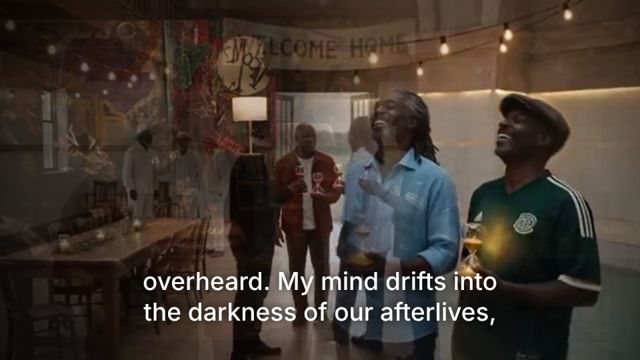
0:13.5loud voices so our hearts
loud voices: the other takes join for one phrase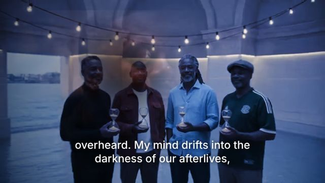
0:19.0darkness of our afterlives,
the afterlife: one cold room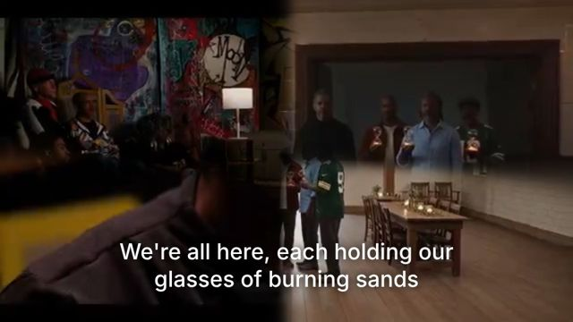
0:24.5We're all here, each holding our
we're all here: four cells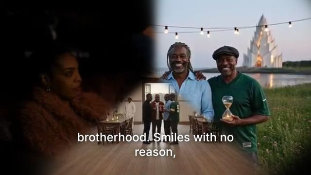
0:36.4This is brotherhood.
brotherhood: everything still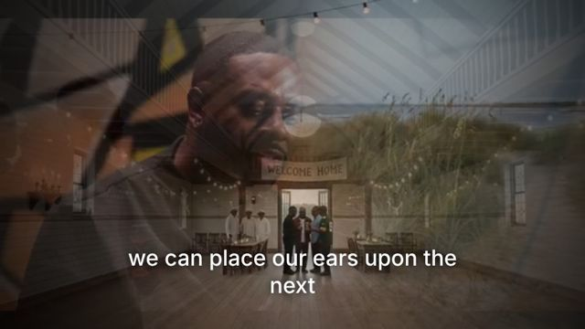
0:45.5we can place our ears upon
the ear moves to the next brother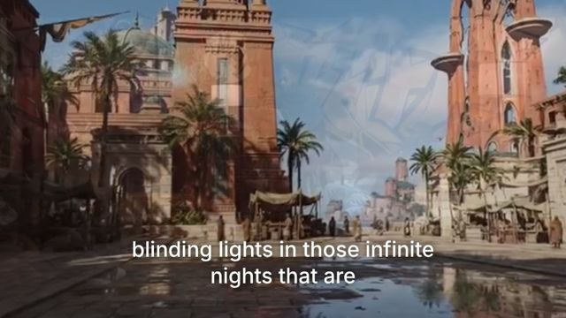
0:51.3of blinding lights
blinding lights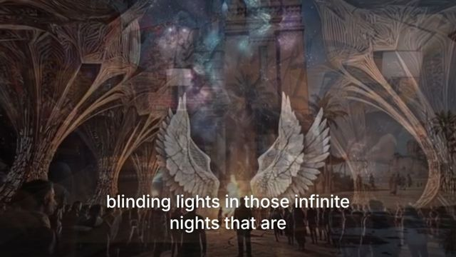
0:53.4in those infinite nights
infinite nights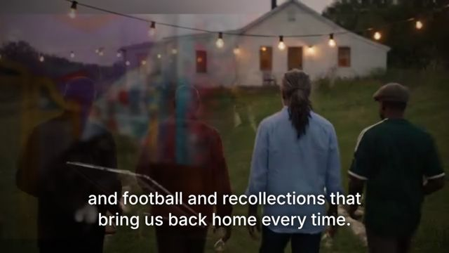
1:01.0and football
football, homeHow to Win My Heart
Being seen
He shows only through a small window that opens and closes with being noticed. A distant wide shot of the end of his reading creeps forward all through the poem, and on the word "smile" it meets him. His younger self and the listening room watch from the edges.
- his reading
- his younger self (his reading from 25 s earlier)
- the room listening (his own wide shot)
- the far window: the last moment of his reading, slowed
- Atlantis night sky
- the waterfall of letters, tinted scarlet and ice
- line sounds and rooms
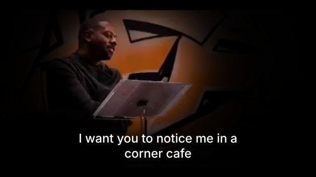
0:03.3I want you to notice me
notice me: a small window onto him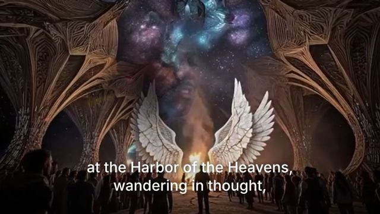
0:08.0the Harbor of the Heavens,
the Harbor of the Heavens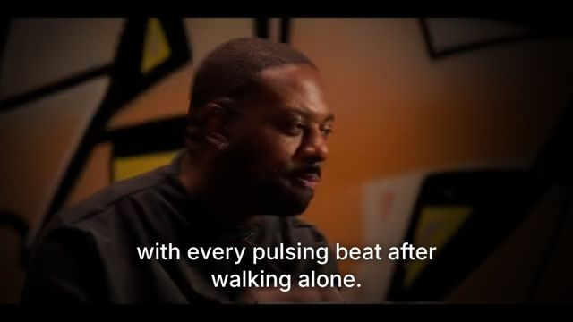
0:19.0to with every pulsing beat
the window pulses on the beat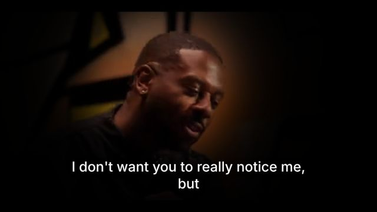
0:23.6I don't want you to really notice me,
don't really notice me: it nearly closes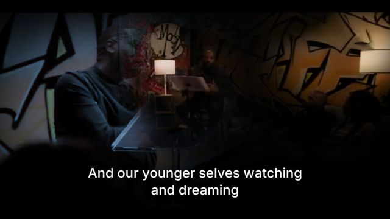
0:28.8And our younger selves watching
younger selves watching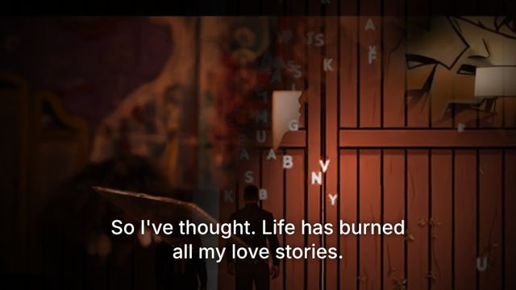
0:44.4Life has burned all my
love stories burn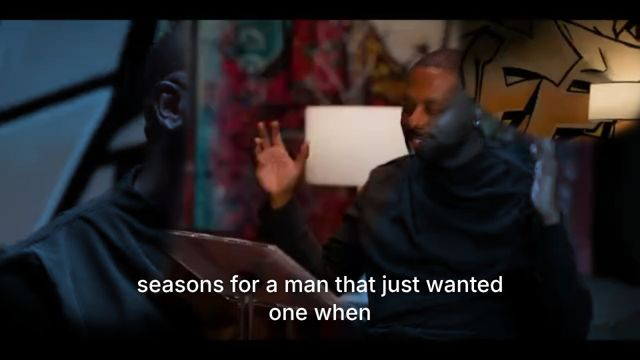
0:49.6Victory lists seasons for
victory-less seasons, in cells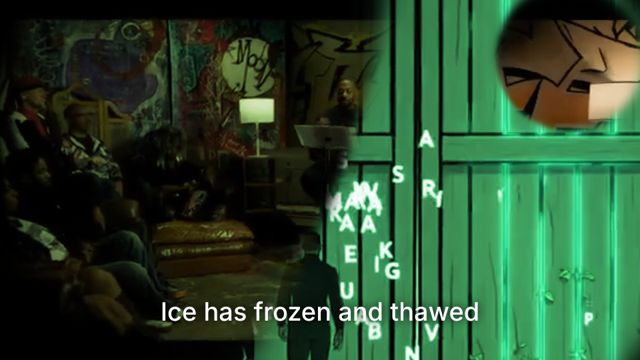
0:55.3Ice has frozen
ice has frozen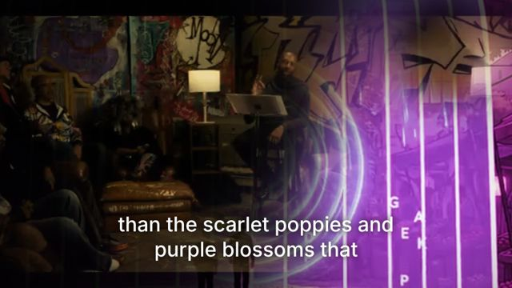
1:07.8brilliant than the scarlet poppies
scarlet poppies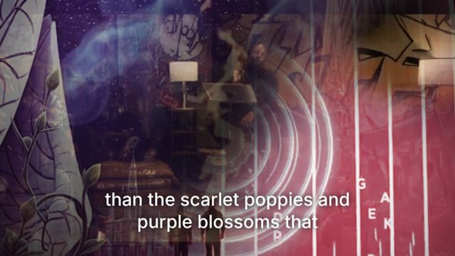
1:09.0poppies and purple blossoms
purple blossoms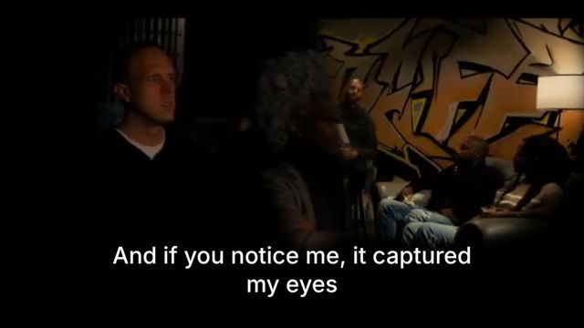
1:22.4me, it captured my eyes
it captured my eyes: someone is looking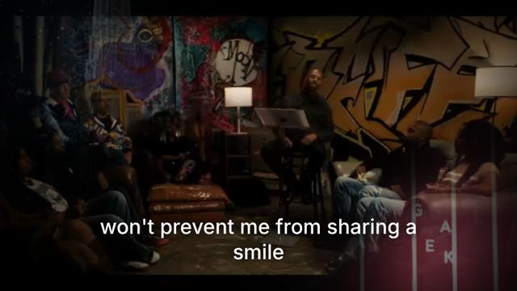
1:36.9won't prevent me from sharing
sharing a smile: the far window arrivesHot Minute
A door and a dance
He holds on: don't make me leave. The starry Atlantis sky fractures on "broken", and a gate closes on "I escaped here for a reason". When he says that line a second time, his first saying of it returns, far away, words and all. Two moments of him trade places for the dance, and the gate closes again as the poem ends.
- his reading
- his first "I escaped here for a reason", 45 s earlier
- his gesturing hands, for the dance
- Atlantis sky (poem 06)
- the gate (poem 06 walk)
- the LiDAR street (poem 10), for the machine
- a sunlit city, for the dawns
- line sounds
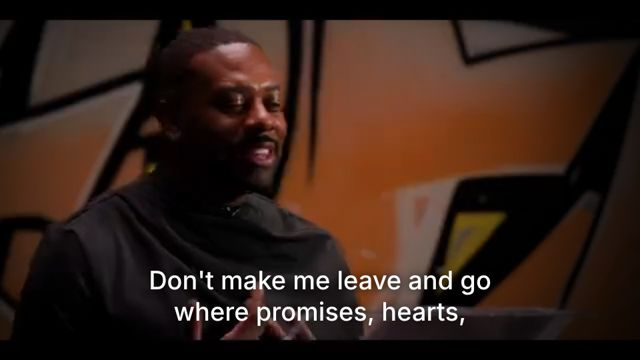
0:03.0Don't make me leave and
don't make me leave: he fills the frame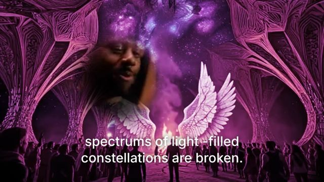
0:08.2-filled constellations are broken.
constellations break into cells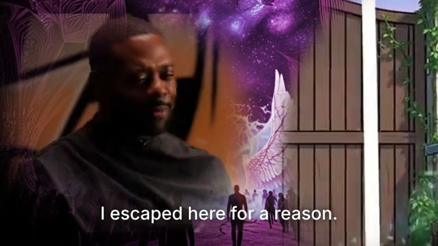
0:10.0I escaped here
the gate, closing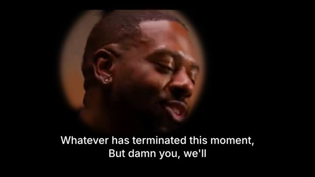
0:25.6Whatever has terminated
terminated: he shrinks to a pinhole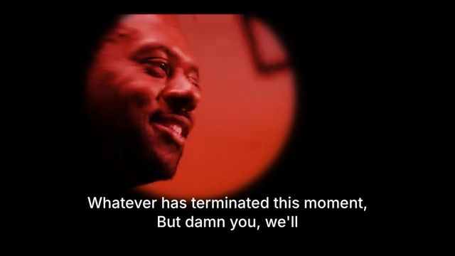
0:27.6this moment, But damn
damn you: red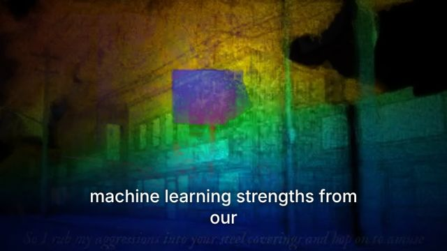
0:34.5artificial escapes
machine-learning strengths: the LiDAR street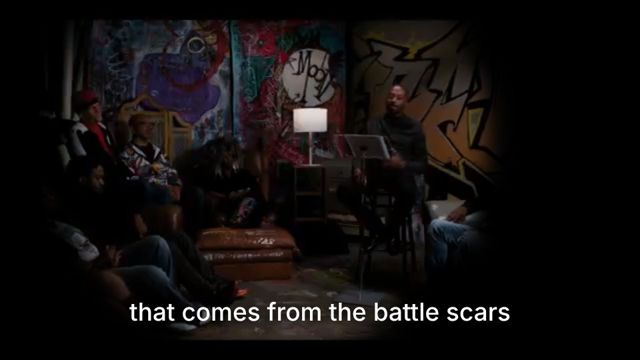
0:45.0impulse that comes from the battle scars
battle scars: hard edges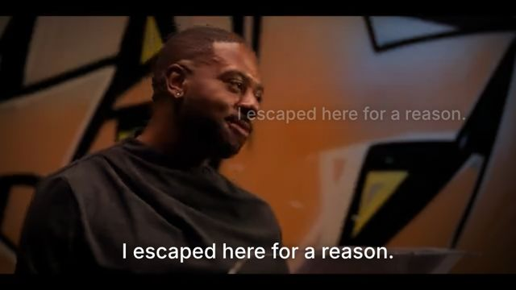
0:55.5I escaped here for
I escaped here for a reason, twice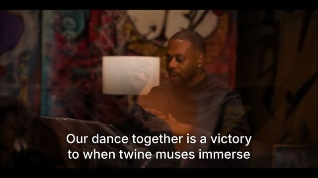
1:00.0a victory to when twine muses
the dance: two moments trade places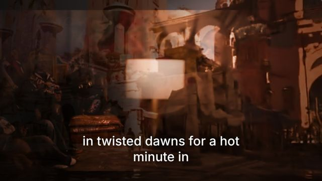
1:04.0twisted dawns for a hot minute
a hot minute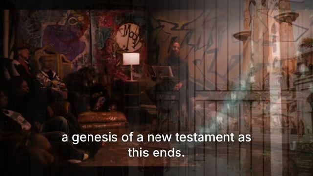
1:07.2of a new testament as
as this ends: the gate again